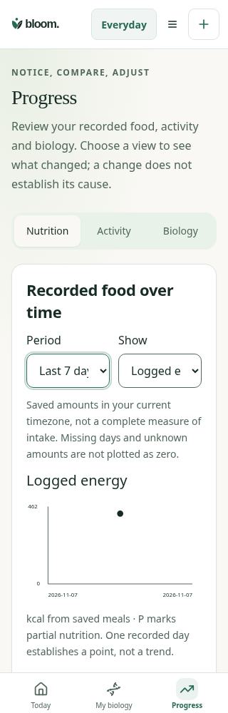
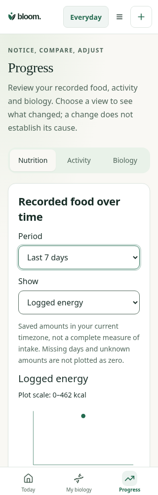

Same synthetic encrypted-label→review→save→journal flow and420kcal record. Before overrides FoodProgress.tsx and visual-overhaul.css from4e82c1ae91608087315a55a242560981bc5c18da; all other code/fixture unchanged. Actual page screenshot at scroll0 with period select focused.
The narrow daily summary now uses two columns to keep Unavailable readable; verified by actual layout assertion. This below-fold change is not pictured here.

